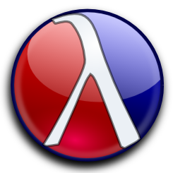
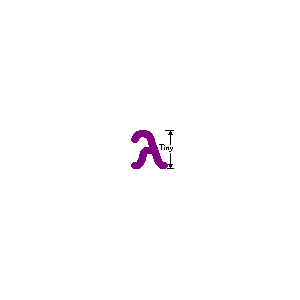

lambda tx Functional Programming in the Lone Star State
functional programming
Functional programming is about units of code that depend only upon inputs and not upon shared or implicit state.
FP has its roots in the lambda calculus developed by Alonzo Church in the 1930s, originally created to explore the difficult problems of computability and understanding the foundations of mathematics.
Today, FP languages drive some of the most sophisticated applications deployed around the globe. FP is used by everything from communications and distributed systems to high finance and academia.
Texas is a wild and independent land, full of vision and promise. Its wide open panoramic landscapes offer unimpeded views under skies that shine with color.
The hearts and minds of a people reflect the land in which they live. As such, Texas provides a fertile ground capable of nurturing the new direction that functional programming can bring our beleaguered industry.
technology in texas
Even from the time before the Treaty of Guadalupe Hidalgo, Texas has had a history of independence and innovation.
In the last century, our state has provided a home for breakthroughs in computing technology. Not only do we currently host such industry giants as Google, HP, Cisco, Microsoft, IBM, and VMware, but even more importantly, great tech companies have found their beginnings here, including the likes of Texas Instruments and Dell.
Below we have listed some of the important dates for Texas-born tech companies. To expand a company''s list of key events, be sure to click on the heading.
- 1919 - Hinckley-Tandy Leather Company formed in Dallas area
- 1963 - Tandy acquired RadioShack
- 1977 - TRS-80 Helped start PC Revolution
- 1930 - Geophysical Service Inc. founded
- 1951 - renamed to Texas Instruments
- 1954 - first transistor radio
- 1958 - first integrated circuit
- 1961 - produced first integrated circuit-based computer
- 1980s - developed and sold the Explorer computer family of LISP machines
- 1962 - founded by Ross Perot
- 1984 - acquired by GM
- 2008 - acquired by HP
- 1976 - founded in a garage
- 1986 - released famous visual programming product, LabVIEW
- 1970s - founders programmed together in a partnership
- 1980 - incorporated in Texas
- pioneered business service management in IT
- 1982 - Former TI senior managers started Compaq
- 1986 - youngest company to make Fortune 500
- 1990s - largest supplier of PC systems
- 1984 - Michael Dell started Dell in UT dorm
- 1992 - Michael Dell the youngest Fortune 500 CEO
- 1999 - surpassed Compaq as largest PC maker
- 1991 - id founded
- 1993 - made computer game history with Doom
- 1994 - founded as Texas.net
- first ISP in San Antonio
- among the first 50 ISPs in the US
- 1996 - Aspyr founded
- 2003 - published the game Call of Duty
- 2005 - published the Civ IV game
- 1996 - Ion Storm founded
- 2000 - made computer game history with Deus Ex
- 1996 - Cymitar Network Systems started
- 1997 - renamed to Cymitar Technology Group
- 1998 - relaunched as Rackspace
- 2010 - cofounded the OpenStack project with NASA programmers
- 2009 - VMware-Cisco-EMC alliance formed in Dallas and Silcon Valley
- 2011 - renamed to Virtual Computing Environment coallition
Listed below are many of the languages lambda tx aims to support through presentations and discussions.
Are we missing one you'd like to see? Propose it for a talk!
-
Chicken SchemeScheme
-
 ClojureJVM
ClojureJVM -
Common Lisp
-
ElixirErlang
-
ErlangErlang
-
F#.Net
-
Haskell
-
LFEErlang
-
OCaml
-
RacketScheme
-
ScalaJVM
-
SML NJStandard ML
-
TinySchemeScheme
meetup topics
Are you passionate about some aspect of Functional Programming? Would you like to share this with other 𝛌-tejans?
Then contact us on the Meetup page with a proposal for your talk! Keep in mind that you don't have to be the one to give the talk, you can still contribute to the list of suggested topics for future talks.
Here are some ideas:
- Introductions to your favorte FP lanugages
- An in-depth look at an FP tool or framework for a particular language
- A case-study (formal or informal) on FP in action
- Summarizing another's FP work/presentation/paper
- Sharing the practical results of applying FP principles to non-FP languages